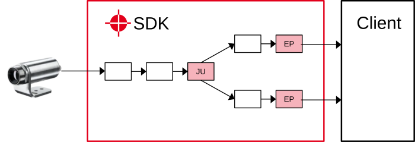
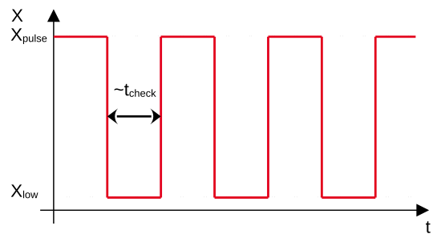
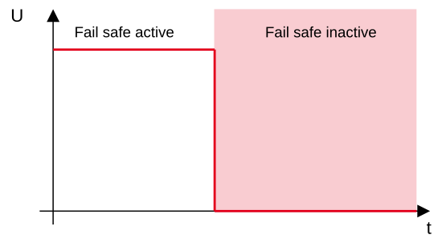

|
Thermal Camera SDK 11.3.0
SDK for Optris Thermal Cameras
|
|
Thermal Camera SDK 11.3.0
SDK for Optris Thermal Cameras
|
The SDK features an internal mechanism that ensures that the most important capabilities of the camera as well as the processing chain of the SDK are working correctly and are delivering reliable and up-to-date thermal data. To this end, the SDK checks a number of conditions in sync with received thermal frames.
If all conditions hold, the SDK will consider the fail safe to be active and will output a heart beat signal on correspondingly configured PIF channel(s). If at least one condition fails, the SDK will deactivate the fail safe by ceasing to provide that signal.
Downstream clients like a programmable logic controller (PLC) can utilize this signal to detect critical failures of the camera and of SDK based applications.
As explained above, the SDK continuously checks a number of conditions to determine whether everything is working as expected. Some of these conditions can be en-/disabled via the configuration file and others can be triggered through the public API of the SDK.
The processing chain of the SDK receives, decodes and processes raw frame data from the camera in order to provide the SDK clients with thermal frames and measurement fields. If it breaks down or gets stuck in part or in its entirety, no up-to-date thermal frames and measurement fields will be available.

The figure above depicts the rough layout of the processing chain used by the SDK. Each rectangle denotes a processing step. At a certain step, here marked with JU (junction), the chain can splits into several branches. One branch will always perform the final computations for the overall thermal frame while the other branches will do the processing for the measurement fields. Once a branch endpoint (EP) is reached the SDK calls either the onThermalFrame() callback for the overall frame or the onMeasurementField() callback for a measurement field.
Every time the SDK reaches the junction point in the processing chain it will validate all relevant fail safe conditions, if a sufficient amount of frames have been processed since the last check. The exact number is chosen by the SDK so that the check will occur roughly every 100 ms. The average time t_check between two subsequent checks can be calculated as follows:
with f as the frequency/framerate specified in the video format settings.
t_check is important since it determines the rate with which the heart beat signal changes.
This mechanism is essential and can not be modified by clients in any way.
In addition to the above discussed mandatory update check the SDK can be instructed to ensure that the endpoints of the processing chain (EP) are reached within a given time frame from the junction step. To this end, you have to enable the processing_chain_timeout check in the fails safe block of the configuration file.
At the moment this check is not very useful because the branches of the processing chain are executed consecutively. If one of them breaks down, the entire chain will break down resulting in no more fail safe conditions checks and a flat heart beat signal. In future versions the branches may be processed concurrently creating the need to ensure that the employed threads are working correctly.
Every camera features a mechanical shutter flag that can completely block the field of view of the sensor chip. It has to closed from time to time for the SDK to calculate an offset for the thermal data. This offset is essential for compensating drifts in the measured temperatures that are for example caused by changing ambient conditions.
The entire sequence from closing the flag, collecting data while it is closed and opening it again is called a flag cycle. If flag cycles fail, the thermal data will become unreliable.
If the flag_timeout check in the fail safe block of the configuration file is enabled, the SDK will verify whether the shutter flag reaches its expected position within a given time. If this is not the case, a flag timeout will occur and the current flag cycle will be considered to have failed. If more flag cycles fail than specified in the configuration, the fail safe will be deactivated. A successful flag cycle will reset this fail safe condition.
flag_timeout condition is disabled. In such a case a flag timeout will only result in a error log message.The fail safe mechanism continuously monitors various conditions which indicate that the camera and the processing chain of the SDK are working properly. If one of these conditions fails, the fail safe will be deactivated. As result, the SDK will no longer publish a heart beat signal on respectively configured PIF output or fail safe channels.
By calling
of the IRImager interface clients can actively fail one of those conditions and thus deactivate the fail safe and its signal. The condition can be restored to a passing state when the same method is called as follows:
This will, however, not necessarily activate the fail safe signal, if other required conditions still fail.
Based on the fail safe checks discussed above the SDK can output a heart beat signal on a PIF analog or digital output channel. Additionally, a level based signal can be provided on a PIF fail safe channel.
Every time the fail safe check passes the SDK toggles the output value of the used PIF channel. Dependent on the channel type this results in
If everything is working as intended, this will yield the following signal on the PIF output channels:

The most important characteristic of this signal are its edges. Their presence indicate whether everything is working correctly. The following table summarizes everything discussed so far for the signal output on PIF analog or digital output channels:
| System | Fail Safe | Conditions | Signal |
|---|---|---|---|
| OK | Inactive | All conditions pass | Edges occur roughly in the time interval specified by t_check. |
| Error | Active | At least one condition fails | No more edges. Signal retains its last level. |
In the case of the PIF fail safe channel the resulting signal is different. Internally, the PIF utilizes the above edge based signal but transforms it into a level based signal.

As illustrated above the PIF fail safe channel outputs a constant voltage level while the fail safe is active that drops to zero once the fail safe is deactivated. There is a very slight delay until this signal reacts to changes in the fail safe state. This due to the circuits used to transform the edge based signal.
| System | Fail Safe | Conditions | Signal |
|---|---|---|---|
| OK | Active | All conditions pass | A constant voltage level greater than 0 V |
| Error | Inactive | At least one condition fails | Voltage level is 0 V |